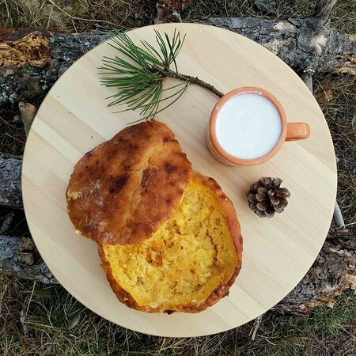

This delicacy consists of a traditional flatbread (lepinja) that is cut in half, coated in thick cream (kajmak), and topped with an egg. The combination is shortly baked and should be doused with a mixture of warm meat drippings, which is locally known as pretop.
Meal prep time : 1 hour
Servings : 2